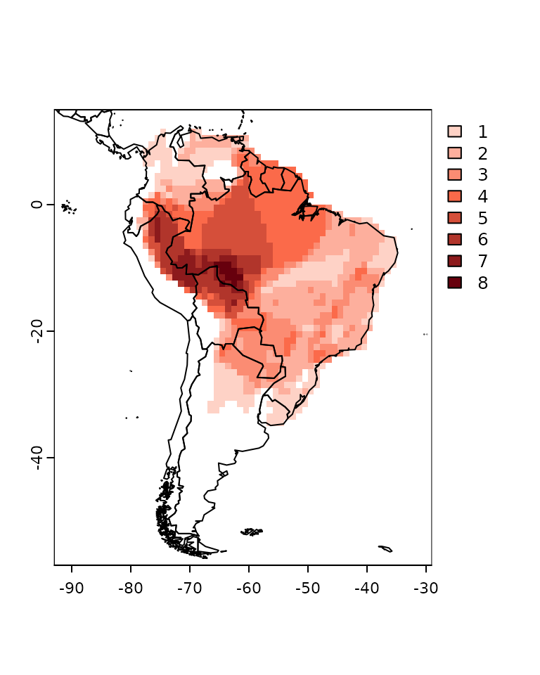
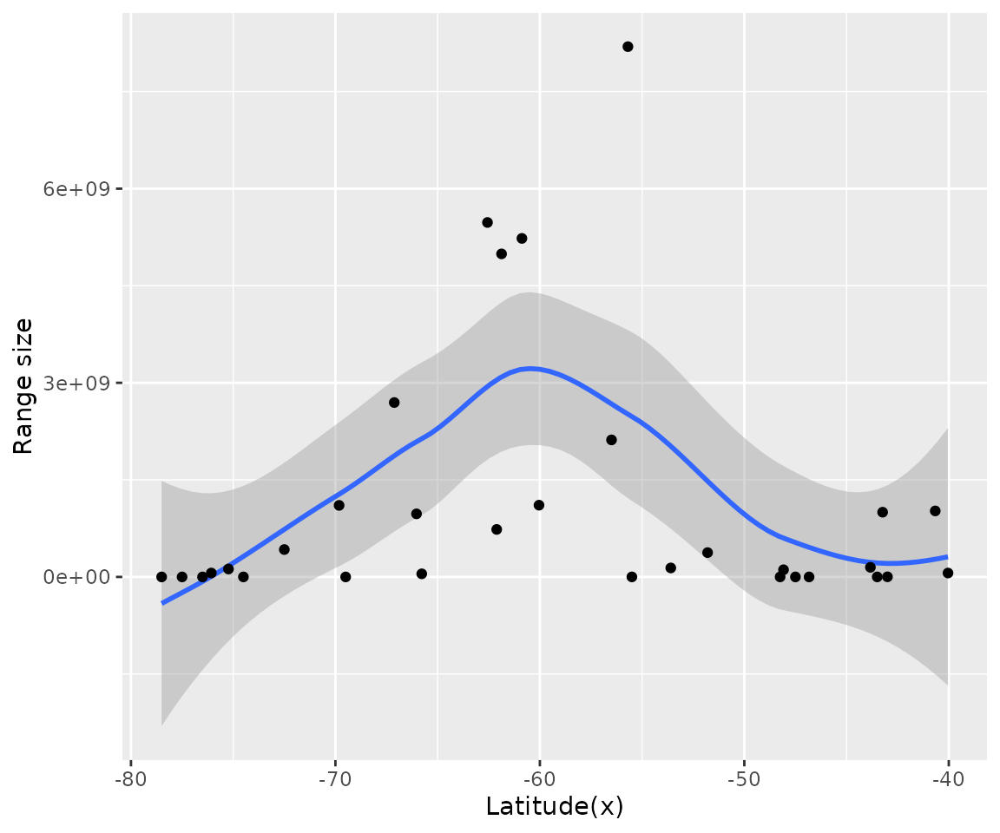
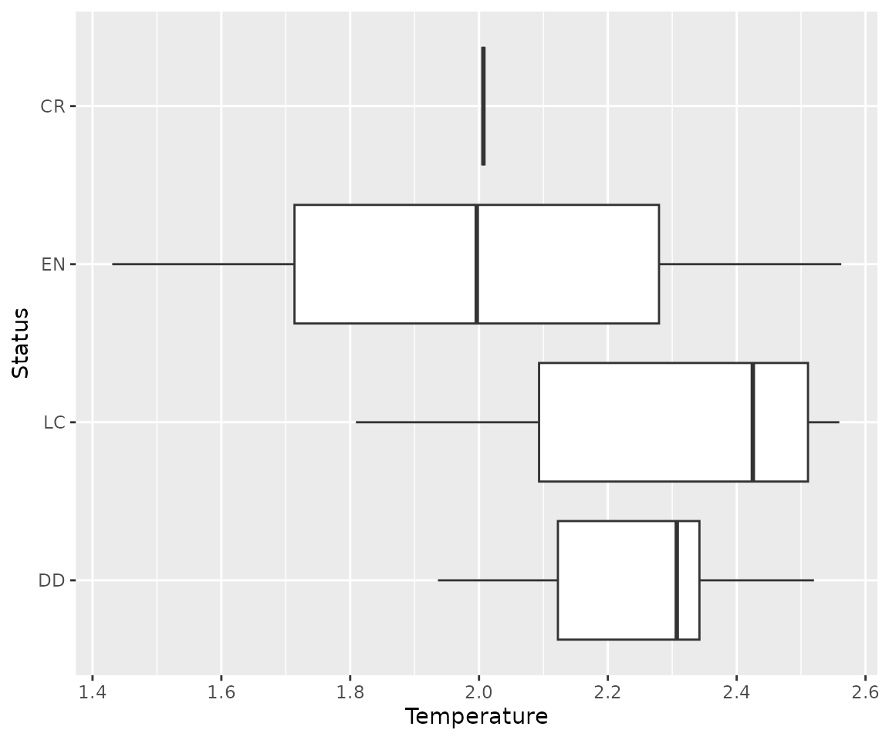

Macroecological analysis at the species level
Source:vignettes/species-level-macroecological-analysis.Rmd
species-level-macroecological-analysis.RmdIn another post, I have shown how to use letsR
to analyze species traits at the community level. But, in many cases
this type of analysis can lead to spurious patterns (click
here for further discussion on this issue). An alternative can be
analyzing the data at the species-level. In this post, I will show two
examples on how to make macroecological analysis at the species level
using the letsR package. In the first example, we will
continue the test of Rapoport’s rule on Phyllomedusa frogs using species
centroids. In the second example, we will summarize climate spatial data
at the species level to explore how temperature correlates with
Phyllomedusa species extinction risk.
To start this test we can load our example
PresenceAbsence object.
Note: I recommend to use the latest version of the
letsR package on GitHub

Example 1: Species level test of Rapoport’s rule on Phyllomedusa frogs.
We first have to calculate species range size. We can do it directly on the species shapefiles for higher precision.
data("Phyllomedusa")
rangesize <- lets.rangesize(Phyllomedusa,
coordinates = "geographic")
rangesize <- rangesize / 1000 # Transform in km2The second step is to calculate species geographical
centroid/midpoint using the function lets.midpoint. There
are several ways to calculate species geographic centroid, and this
function offers several methods to do it. When species range are both
circular and continuous, all of the methods will provide the same
answer. However, as the shape of distributions start to become more
complex, different methods will provide very different answers. For this
example, we will use the default option “PC” (polygon centroid). This
method will generate a polygon from the raster, and calculate the
centroid of this polygon.
centroids <- lets.midpoint(PAM)
centroids| Species | x | y |
|---|---|---|
| Phyllomedusa araguari | -47.50000 | -19.500000 |
| Phyllomedusa atelopoides | -72.50000 | -7.053571 |
| Phyllomedusa ayeaye | -46.83333 | -20.833333 |
| Phyllomedusa azurea | -56.49554 | -19.098214 |
| Phyllomedusa bahiana | -40.03846 | -11.807692 |
| Phyllomedusa baltea | -74.50000 | -9.500000 |
| Phyllomedusa bicolor | -60.87860 | -3.374486 |
| Phyllomedusa boliviana | -62.11165 | -15.082524 |
| Phyllomedusa burmeisteri | -43.23684 | -17.912281 |
| Phyllomedusa camba | -66.03398 | -11.995146 |
| Phyllomedusa centralis | -55.50000 | -15.500000 |
| Phyllomedusa coelestis | -76.07143 | -3.857143 |
| Phyllomedusa distincta | -48.08333 | -25.500000 |
| Phyllomedusa duellmani | -77.50000 | -5.500000 |
| Phyllomedusa ecuatoriana | -78.50000 | -2.500000 |
| Phyllomedusa hypochondrialis | -55.69363 | -9.071974 |
| Phyllomedusa iheringii | -53.59677 | -31.758064 |
| Phyllomedusa itacolomi | -43.50000 | -20.500000 |
| Phyllomedusa megacephala | -43.00000 | -19.500000 |
| Phyllomedusa neildi | -69.50000 | 11.000000 |
| Phyllomedusa nordestina | -40.66216 | -10.707207 |
| Phyllomedusa oreades | -48.25000 | -14.750000 |
| Phyllomedusa palliata | -69.82031 | -9.289062 |
| Phyllomedusa perinesos | -76.50000 | 0.500000 |
| Phyllomedusa rohdei | -43.83333 | -21.981482 |
| Phyllomedusa sauvagii | -60.04264 | -24.011628 |
| Phyllomedusa tarsius | -67.12143 | -4.596429 |
| Phyllomedusa tetraploidea | -51.79630 | -24.074074 |
| Phyllomedusa tomopterna | -62.56324 | -4.081028 |
| Phyllomedusa trinitatis | -65.77778 | 10.277778 |
| Phyllomedusa vaillantii | -61.87419 | -4.947312 |
| Phyllomedusa venusta | -75.23077 | 7.461538 |
We can also plot the geographical centroids.
d <- data.frame(centroids[, 2:3],
"Species" = centroids[, 1],
"Range size" = rangesize)
sp <- terra::vect(x = d, geom = c("x", "y"))
plot(sp)
plot(sf::st_geometry(wrld_simpl), add = TRUE)To check the Rapoport’s rule we can plot the latitude against the range size:
data_plot <- data.frame(centroids[, 2:3], "Range size" = rangesize)
g <- ggplot(data_plot, aes(x, Range_size))
g + geom_smooth() + geom_point() + labs(x = "Latitude(x)", y = "Range size")
Again, the data indicate that Rapoport’s rule does not apply for Phyllomedusa genus. However, there seems to be an interesting pattern where range size decreases from the center towards the extremes of the group. This could be an effect of niche conservatism, where species in the extreme latitude would face very different conditions from the ancestral Phylllomedusa. Another possibility is that this pattern could be due to the shape of the continent, where extreme latitudes means smaller longitudes.
Example 2: Extinction risk correlation with temperature
To evaluate how temperature correlates with extinction risk, we first
have to add the temperature variable to the PresenceAbsence
object.
data(temp)
r <- terra::unwrap(temp)
PAM_env <- lets.addvar(PAM, r, fun = mean)Next step is to get the average temperature values per species. The
lets.summarizer can do this directly on the resulting
object of lets.addvar function (note that this can only be
done if onlyvar = FALSE). We only have to indicate the
position of the variable in the matrix using the argument
pos.
pos <- which(colnames(PAM_env) == "bio1_mean")
temp_mean <- lets.summarizer(PAM_env, pos)
temp_mean| Species | bio1_mean |
|---|---|
| Phyllomedusa araguari | 207.5278 |
| Phyllomedusa atelopoides | 257.3056 |
| Phyllomedusa ayeaye | 201.4074 |
| Phyllomedusa azurea | 235.1530 |
| Phyllomedusa bahiana | 230.6512 |
| Phyllomedusa baltea | 253.9167 |
| Phyllomedusa bicolor | 260.1406 |
| Phyllomedusa boliviana | 236.0925 |
| Phyllomedusa burmeisteri | 220.2652 |
| Phyllomedusa camba | 248.1014 |
| Phyllomedusa centralis | 238.5556 |
| Phyllomedusa coelestis | 247.5556 |
| Phyllomedusa distincta | 189.9268 |
| Phyllomedusa duellmani | 214.6944 |
| Phyllomedusa ecuatoriana | 146.5556 |
| Phyllomedusa hypochondrialis | 249.4254 |
| Phyllomedusa iheringii | 179.0449 |
| Phyllomedusa itacolomi | 196.7222 |
| Phyllomedusa megacephala | 212.2639 |
| Phyllomedusa neildi | 249.5278 |
| Phyllomedusa nordestina | 240.2558 |
| Phyllomedusa oreades | 237.2083 |
| Phyllomedusa palliata | 251.3197 |
| Phyllomedusa perinesos | 221.5556 |
| Phyllomedusa rohdei | 208.1575 |
| Phyllomedusa sauvagii | 223.1641 |
| Phyllomedusa tarsius | 254.4805 |
| Phyllomedusa tetraploidea | 204.5278 |
| Phyllomedusa tomopterna | 257.5273 |
| Phyllomedusa trinitatis | 255.5166 |
| Phyllomedusa vaillantii | 257.8461 |
| Phyllomedusa venusta | 243.0564 |
Following our example, we need to obtain the IUCN extinction risk
data. Previous version of the package included functions to do this, but
they are no longer supported. Luckily, there is a new package called rredlist
that can do this for us. Yet, for now, we can use the example data in
the letsR package called IUCN.
data("IUCN")
IUCN| Species | Family | Status | Criteria | Population | Description_Year | Country |
|---|---|---|---|---|---|---|
| Phyllomedusa araguari | HYLIDAE | DD | Unknown | 2007 | Brazil | |
| Phyllomedusa atelopoides | HYLIDAE | LC | Unknown | 1988 | Bolivia, Brazil, Peru | |
| Phyllomedusa ayeaye | HYLIDAE | CR | B1ab(iii)+2ab(iii) | Unknown | 1966 | Brazil |
| Phyllomedusa azurea | HYLIDAE | DD | Unknown | 1862 | Argentina, Bolivia, Brazil, Paraguay | |
| Phyllomedusa bahiana | HYLIDAE | DD | Unknown | 1925 | Brazil | |
| Phyllomedusa baltea | HYLIDAE | EN | B1ab(iii)+2ab(iii) | Decreasing | 1979 | Peru |
| Phyllomedusa bicolor | HYLIDAE | LC | Stable | 1772 | Bolivia, Brazil, Colombia, French Guiana, Guyana, Peru, Suriname, Venezuela | |
| Phyllomedusa boliviana | HYLIDAE | LC | Stable | 1902 | Argentina, Bolivia, Brazil | |
| Phyllomedusa burmeisteri | HYLIDAE | LC | Stable | 1882 | Brazil | |
| Phyllomedusa camba | HYLIDAE | LC | Stable | 2000 | Bolivia, Brazil, Peru | |
| Phyllomedusa centralis | HYLIDAE | DD | Unknown | 1965 | Brazil | |
| Phyllomedusa coelestis | HYLIDAE | LC | Unknown | 1874 | Colombia, Ecuador, Peru | |
| Phyllomedusa distincta | HYLIDAE | LC | Decreasing | 1950 | Brazil | |
| Phyllomedusa duellmani | HYLIDAE | DD | Unknown | 1982 | Peru | |
| Phyllomedusa ecuatoriana | HYLIDAE | EN | B1ab(iii) | Decreasing | 1982 | Ecuador |
| Phyllomedusa hypochondrialis | HYLIDAE | LC | Stable | 1800 | Argentina, Bolivia, Brazil, Colombia, French Guiana, Guyana, Paraguay, Suriname, Venezuela | |
| Phyllomedusa iheringii | HYLIDAE | LC | Unknown | 1885 | Brazil, Uruguay | |
| Phyllomedusa itacolomi | HYLIDAE | DD | Unknown | 2006 | Brazil | |
| Phyllomedusa megacephala | HYLIDAE | DD | Unknown | 1926 | Brazil | |
| Phyllomedusa neildi | HYLIDAE | DD | Unknown | 2006 | Venezuela | |
| Phyllomedusa nordestina | HYLIDAE | DD | Unknown | 2006 | Brazil | |
| Phyllomedusa oreades | HYLIDAE | DD | Unknown | 2002 | Brazil | |
| Phyllomedusa palliata | HYLIDAE | LC | Stable | 1873 | Bolivia, Brazil, Ecuador, Peru | |
| Phyllomedusa perinesos | HYLIDAE | DD | Unknown | 1973 | Colombia, Ecuador | |
| Phyllomedusa rohdei | HYLIDAE | LC | Stable | 1926 | Brazil | |
| Phyllomedusa sauvagii | HYLIDAE | LC | Stable | 1882 | Argentina, Bolivia, Brazil, Paraguay | |
| Phyllomedusa tarsius | HYLIDAE | LC | Stable | 1868 | Brazil, Colombia, Ecuador, Peru, Venezuela | |
| Phyllomedusa tetraploidea | HYLIDAE | LC | Stable | 1992 | Argentina, Brazil, Paraguay | |
| Phyllomedusa tomopterna | HYLIDAE | LC | Stable | 1868 | Bolivia, Brazil, Colombia, Ecuador, French Guiana, Guyana, Peru, Suriname, Venezuela | |
| Phyllomedusa trinitatis | HYLIDAE | LC | Stable | 1926 | Trinidad and Tobago, Venezuela | |
| Phyllomedusa vaillantii | HYLIDAE | LC | Stable | 1882 | Bolivia, Brazil, Colombia, Ecuador, French Guiana, Guyana, Peru, Suriname, Venezuela | |
| Phyllomedusa venusta | HYLIDAE | LC | Decreasing | 1967 | Colombia, Panama |
Finally, we can verify the relationship between temperature and extinction risk.
level_order <- c("DD", "LC", "EN", "CR") # ordering for the plot
data <- data.frame("Status" = factor(IUCN$Status, levels = level_order),
"Temperature" = temp_mean[, 2] / 10)
g <- ggplot(data, aes(Status, Temperature))
g + geom_boxplot() + coord_flip()
The graph indicate that there is a tendency for threatened Phyllomedusa species to occur in colder regions. Still, further statistical analysis should be done to confirm this pattern.
To cite letsR in publications use: Bruno Vilela and Fabricio Villalobos (2015). letsR: a new R package for data handling and analysis in macroecology. Methods in Ecology and Evolution. DOI: 10.1111/2041-210X.12401